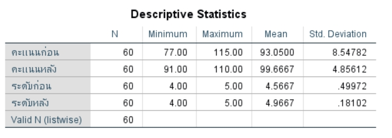
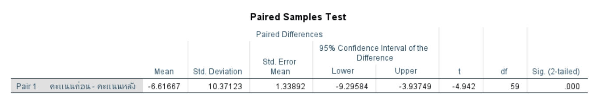
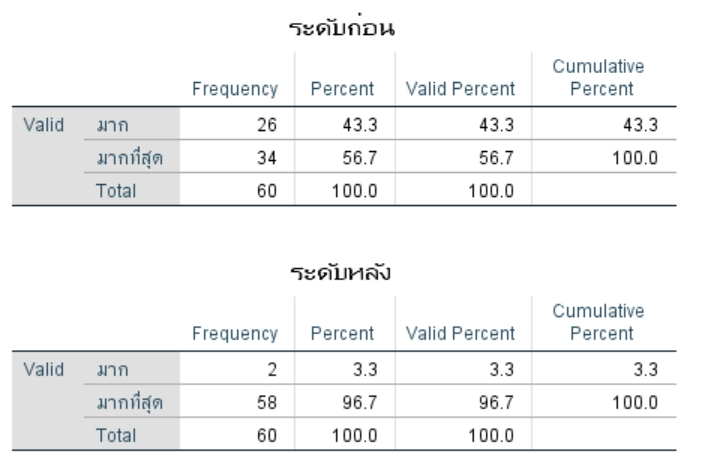

การศึกษาประสิทธิผลของกลไกศูนย์เฝ้าระวังและแจ้งเตือนยาระดับตำบล ในตำบลยางพลวง อำเภอเมือง จังหวัดศรีสะเกษ เพื่อลดยาอันตรายในร้านชำและยกระดับความรู้ผู้ประกอบการ

Descriptive Statistics — คะแนนความรู้ผู้ประกอบการก่อนและหลังการดำเนินงาน
ที่มาของปัญหา: การจำหน่ายยาอันตรายในร้านชำเป็นปัญหาสาธารณสุขที่ส่งผลกระทบต่อสุขภาพของประชาชน เกิดจากการขาดการควบคุมตาม พ.ร.บ. ยา พ.ศ. 2510 จากการตรวจสอบพบว่าในปีงบประมาณ 2567 มีร้านชำที่ไม่ผ่านมาตรฐานถึง 24.14% (1,825 ร้าน)
💡 ในปีงบประมาณ 2568 พบว่ายังคงมีร้านชำที่ไม่ผ่านมาตรฐาน G-RDU 26.24% และ G-SHP 28.48% จึงจำเป็นต้องพัฒนากลไกการเฝ้าระวังระดับชุมชน
วัตถุประสงค์: เพื่อเปรียบเทียบผลลัพธ์ของการเฝ้าระวังยาอันตรายในร้านชำ และความรู้ของผู้ประกอบการร้านชำ ก่อนและหลังการดำเนินงานศูนย์เฝ้าระวังและแจ้งเตือนยาระดับตำบล
ระเบียบวิธีวิจัย: ใช้รูปแบบการวิจัยกึ่งทดลอง ศึกษาร้านชำทุกร้านในพื้นที่ตำบลยางพลวง จำนวน 60 ร้าน และผู้ประกอบการ 60 คน เก็บข้อมูลด้วย G-RDU & G-SHP MOPH วิเคราะห์ด้วย Paired t-test ที่ P < 0.05
ลักษณะของกลุ่มตัวอย่าง: ผู้ประกอบการส่วนใหญ่เป็นเพศหญิง (71.67%) อายุ 41–50 ปี (58.33%) การศึกษาระดับมัธยม/อนุปริญญา (50%) ดำเนินกิจการมา 6–10 ปี (45%)
การดำเนินงานผ่านกลไกศูนย์เฝ้าระวังและแจ้งเตือนยาระดับตำบล โดยบูรณาการภาคีเครือข่ายในชุมชน

ผลการดำเนินงานแสดงให้เห็นถึงการพัฒนาที่มีนัยสำคัญทางสถิติในทุกตัวชี้วัด
*** p < 0.001 — มีนัยสำคัญทางสถิติ

5 ขั้นตอนที่ได้จากการวิจัย สามารถขยายผลไปยังชุมชนอื่นที่มีปัญหาลักษณะเดียวกัน
รูปแบบการจัดการปัญหา 5 ขั้นตอนนี้ สามารถนำไปประยุกต์ใช้ในชุมชนอื่นที่มีปัญหาการจำหน่ายยาอันตรายในร้านชำ โดยผ่านกลไก ศูนย์เฝ้าระวังและแจ้งเตือนยาระดับตำบล ซึ่งบูรณาการภาครัฐ (รพ.สต., อปท.) และภาคประชาชน (อสม.)
สิรีธร เดชศิลาจารึกูณ เป็นเภสัชกรชำนาญการที่ปฏิบัติงานด้านคุ้มครองผู้บริโภค สังกัดสำนักงานสาธารณสุขจังหวัดศรีสะเกษ มีความเชี่ยวชาญด้านการเฝ้าระวังและควบคุมผลิตภัณฑ์สุขภาพในชุมชน การพัฒนาระบบเฝ้าระวังยาระดับตำบล และการส่งเสริมการใช้ยาอย่างสมเหตุผล (RDU) ในระดับชุมชน
งานวิจัยชิ้นนี้เป็นส่วนหนึ่งของการขอรับการประเมินตำแหน่งเภสัชกรชำนาญการ โดยมุ่งพัฒนากลไกการดำเนินงานที่ตอบสนองต่อปัญหาสาธารณสุขในพื้นที่อย่างมีประสิทธิผล
งานวิจัยนี้ได้รับการสนับสนุนจากสำนักงานสาธารณสุขจังหวัดศรีสะเกษ ภายใต้การดำเนินงานตามแผนงาน Service Plan RDU ปีงบประมาณ 2568